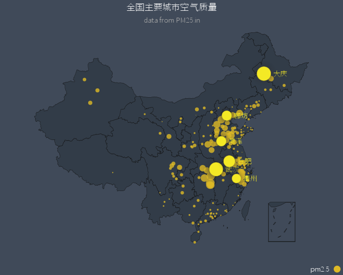
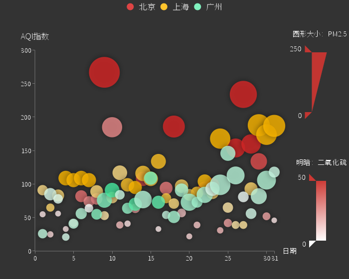
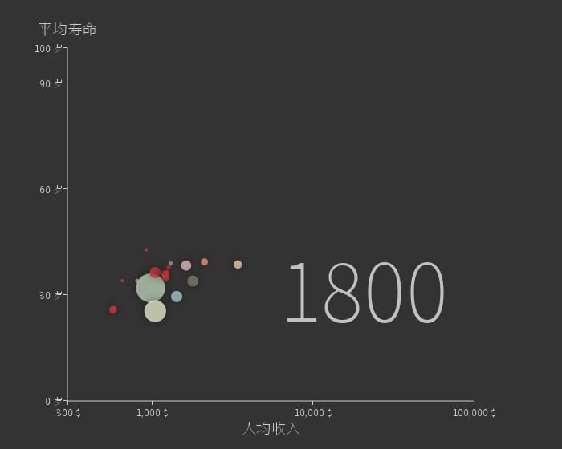

注册
|
登录
王学锋
退出
首页
专业大数据分析系统
大数据分析能力开放系统
数据运营平台
云数据开放平台
知识库
收藏
专题
马铃薯
玉米
小麦

马铃薯种植面积图
马铃薯种植面积图

马铃薯种植面积图
马铃薯种植面积图

马铃薯种植面积图
马铃薯
玉米
小麦
马铃薯种植面积图
马铃薯种植面积图
马铃薯种植面积图
马铃薯种植面积图
马铃薯种植面积图
报告标题：
辅助说明：
用于解释报告标题的辅助说明..
报告预览：
选择地点..
河北省
山东省
安徽省
江苏省
甘肃省
辅助说明：
选择地点..
河北省
山东省
安徽省
江苏省
甘肃省
辅助说明：
生成报告
取消
copyright@2011 JinheTech.ALL rights reserved.版权所有金禾天成 京ICP备11009730